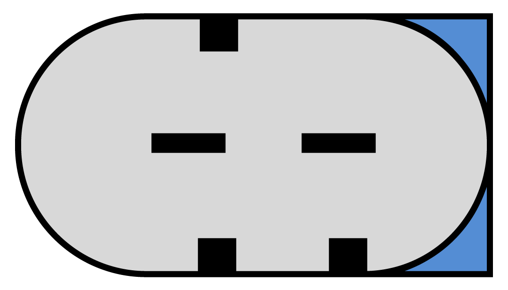

comprehensive and reliableinfo tech
En caso de que usted tiene cualquier pregunta técnica sobre equipos de prueba Motoplat, por favor póngase en contacto con nosotros a través del formulario de contacto en nuestro sito web.
esp
nederlands
english
deutsch
français
español
português
中文
русский
conexión lin
más info
Recientemente hemos desarrollado nuevos protocolos LIN y los hemos reorganizado para utilizarlos en el nuevo equipo de pruebas VC-07 USB y otros equipos de pruebas Motoplat en el futuro. La señal LIN se mostrará ahora desde LIN-1 hasta LIN-14, junto con su código ID. Si aparecieran nuevos protocolos LIN en el mercado, añadiremos más números en caso necesario. Tomamos esta decisión para facilitar y reducir el coste del desarrollo en refabricación y para aportar más claridad a los clientes. Nuevamente, se evita la necesidad de contar con un regulador para cada alternador al organizar los reguladores en grupos o códigos ID. Por lo tanto, si conoce que se utiliza LIN-2 en Mercedes y VW, solo tiene que elegir el más económico ya que será compatible y ahorrará dinero y espacio de almacenamiento.
Los protocolos LIN-1 y LIN-2 se utilizaron desde 2002 hasta 2011. Los reguladores LIN-1 y LIN-2 con códigos diferentes no pueden intercambiarse: LIN-1 debe reemplazarse por LIN-1 y esto mismo es aplicable a LIN-2. El resto de LIN superiores a LIN-2 presentan sistemas y velocidades de transmisión diferentes y no pueden intercambiarse. El código que aparece en pantalla es el código de identificación del regulador que se envía a la ECU que se identificará. Eso significa que hablan el mismo idioma.
Aquí es donde aparecerá el protocolo (ID), por ejemplo: alternadores de BMW LIN-Infineon o del nuevo Valeo serie CG. Si comprueba un alternador y se muestra en la pantalla un protocolo LIN-4 (Honda), pero no se trata de un alternador de Honda, quiere decir que está controlado por el mismo protocolo. No es posible intercambiar alternadores de BOSCH y VALEO con el mismo protocolo LIN, ya que utilizan diferentes direcciones (ID) y no funcionarán en el vehículo.
Download the following Excel file to get an overview of the different protocol codes and the car manufacturers.
Tenga en cuenta que nosotros hemos asumido la responsabilidad de reorganizar los protocolos LIN. 19 de los protocolos LIN mencionados anteriormente no existen oficialmente para los fabricantes de vehículos de equipo original (OE) en todo el mundo, excepto LIN-1 y LIN-2.
Los fabricantes de vehículos anteriores se citan únicamente como ejemplo!
conexión bss
más info
Existen 3 señales BSS diferentes. La diferencia entre ellas es la capacidad de mostrar diferentes errores del alternador.
BSS-1 = solo muestra un error Mecánico o Eléctrico
BSS-2 = solo muestra un error Mecánico o Eléctrico
BSS-3 = puede mostrar ambos tipos de errores, Mecánico y Eléctrico
No es posible intercambiar reguladores BSS-1 y BSS-2 entre sí ya que la ECU del vehículo puede preguntar sobre un cierto error y, si no obtiene la respuesta correcta, mostrará un error del alternador (lámpara de carga encendida) en el tablero de instrumentos. BSS-3 puede emplearse para BSS-1 y BSS-2 ya que es universal (BSS-3 puede proporcionar información sobre ambos errores). Todos los reguladores de tensión BOSCH son BSS-3, por lo tanto nunca deben intercambiarse con otro regulador. Debe prestarse atención a los reguladores VALEO, ya que se suministran en 3 opciones diferentes: BSS-1, BSS-2 y BSS-3. La experiencia indica que resulta imposible adquirir nuevos reguladores BSS-3 de VALEO actualmente.
Por ejemplo. Desde 2003, en vehículos de la serie BMW E60 se instala un alternador Valeo TG17C010 que incorpora un sistema BSS-2 a bordo. Algunos años más tarde utilizaron el mismo alternador aunque su número de referencia se reemplazó por TG17C048, que incluye un regulador BSS-3. Si solicita un regulador de tensión Valeo para ese alternador en particular, recibirá un regulador BSS-2. Si adquiere un alternador TG17C048 nuevo, incorporará un regulador BSS-3.
Hemos comprobado la señal procedente de la ECU en un BMW E60 equipado con el alternador de equipo original (OEM) TG17C048 (BSS-3), pero se trataba de un BSS-2. Probablemente, las fábricas de BMW se están preparando para actualizar el protocolo con BSS-3 aunque, por el momento, solo equipan los vehículos con alternadores BSS-3. Es muy posible que el protocolo BSS deje de desarrollarse, ya que utilizarán el nuevo LIN-INFINEON en el futuro.
Esta misma situación se produce con BMW TG17C034 y VW TG17C020: El equipo original (OEM) se suministra con BSS-3, el equipo de postventa incluye BSS-2 y debería funcionar sin problemas. En estas situaciones, recomendamos pedir el correspondiente a los reguladores de tensión Valeo y comprobar si se trata realmente de un regulador BSS-1, BSS-2 o BSS-3. De esta manera se despejará cualquier duda y podrá montar ese regulador BSS específico en ese alternador. Esto evitará la necesidad de contar con numerosos reguladores distintos para cada alternador BSS diferente.
conexión vw
más info
Investigamos la posibilidad de identificar las conexiones de un alternador comprobando la posición de las correderas en el interior de los denominados "conectores VW" y es posible.
Como observará en el conector COM inferior, la corredera de la parte inferior es recta en el espacio entre las otras dos correderas de la parte superior. En este caso, es absolutamente seguro que se trata de un conector COM. No importa si tiene un conector de 1 pin o 2 pines.

Figura 1
En las figuras 2 y 3 inferiores observará que las correderas se encuentran en una posición diferente con respecto al conector COM anterior. La figura 2 muestra las dos correderas en la parte inferior. La que está a la derecha es opuesta a la de la parte superior. En la figura 3 las correderas son exactamente opuestas a las del conector de la figura 2.

Figura 2
Figura 3
conexión c
más info
La conexión C se encuentra en los alternadores de ciertas marcas de automóviles, como Toyota u Honda. Puede reconocerla por su forma cuadrada y ovalada.
Las definiciones de la conexión son las siguientes:
L = Lámpara
IG = Encendido
C = Ordenador
FR = Realimentación
Puede parecer que es difícil realizar pruebas en la conexión C, pero no es así. Solo tiene que conectar el terminal C a masa y observar cómo el VSP baja a 12,8 voltios. Por ejemplo, durante la aceleración del vehículo, y con el terminal conectado a masa mediante la ECU, el alternador se desactiva temporalmente. Esto le permite ahorrar combustible.
conexión com
más info
Los alternadores modernos cuentan con una conexión COM. A continuación encontrará más información sobre estas conexiones y los protocolos.
¿Qué es COM? COM es la abreviatura de Communication (comunicación) o Computer (ordenador) y es una señal de comunicación digital que se mide en bytes.
Funciones:
Estas conexiones han sido desarrolladas para ahorrar combustible
Las conexiones utilizan una señal digital, siendo una más rápida que la otra
Cuanto más rápido reaccione el alternador a las solicitudes de los ordenadores del vehículo, mayor ahorro de combustible se conseguirá
La velocidad de comunicación se conoce como tasa de baudios
conexión com
BSS-1
BSS-2
BSS-3
LIN-1
LIN-2
LIN-3
LIN-4
LIN-5
LIN-6
LIN-7
LIN-8
LIN-9
LIN-10
LIN-11
LIN-12
LIN-13
LIN-14
LIN-15
LIN-16
LIN-17
LIN-18
LIN-19
LIN-20
Tasa de transferencia de una conexión en serie, la cantidad de bits por segundo que puede enviarse por un canal en serie. Una medición de la velocidad a la que se transmiten los datos del módem. La tasa de baudios, a menudo confundida con los bps (número de bits por segundo enviados), es en realidad el número de eventos, o cambios de señal, que se producen en un segundo. Un evento en la comunicación digital puede, gracias a la alta velocidad, codificar más de un bit; y la tasa de baudios no es necesariamente igual a los bps, ya que la tasa de baudios es una unidad más precisa que se aplica a los módems. Por ejemplo, un módem de 9.600 baudios codifica 4 bits por evento y trabaja con 2.400 baudios, pero transmite a 9.600 bps (2.400 eventos y 4 bits por evento) y recibe la denominación de módem de 9.600 bps.
conexión dfm
más info
DFM significa Monitor Digital de Campo. Cada marca de alternador tiene una abreviación diferente para la conexién de MDC, por ejemplo: FR(Field Return, es decir, retorno de campo), DF(Digital Field, es decir, campo digital) , DFM (Véase arriba), M(Monitor), LI(Load Indicator, es decir, indicador de carga). Todos funcionan del mismo modo.
Estas son las siguientes funciones. En cuanto a la conexión DFM, existe una medida positiva y otra negativa y ambas funcionan con una pulsación de bloqueo. Cuando la carga del alternador incrementa la pulsación de bloqueo y es más grande o más pequeña dependiendo de la aplicación del vehículo. Esto se mide en % y se denomina PWM (es decir, ajuste de pulsación). De este modo, la unidad de control electrónico del vehículo conoce la carga en un momento específico. Si la carga es demasiado elevada en la unidad de control electrónico algunos accesorios del vehículo pueden dejar de funcionar o aumenta la velocidad de ralentí.
DFM (M,FR,DF,LI,F) es una señal de bloque (información) que se envía desde el alternador hasta la ECU del vehículo. Muestra el nivel de carga del rotor del alternador, también conocida como fuerza electromagnética. Ésta influye directamente en la energía producida por el alternador.
La tensión se regula activando la corriente del rotor con una frecuencia de, por ejemplo, 150 Hz, que cambia la fuerza electromagnética. Mientras más prolongado sea el tiempo de duración de la corriente, más amplio será el ciclo de trabajo.
conexión pcm
más info
El PCM (Módulo de control del grupo motopropulsor) se utiliza en Europa en los proyectos de Ford y Landrover. La señal trabaja de la misma forma que la señal DFM, pero ahora la ECU del vehículo envía esta señal al regulador para cambiar el VSP (Punto de ajuste de tensión), en función del estado de la batería (AS) y la carga (LI) en el momento específico.
Cuanto mayor sea el pulso, más alto será el VSP y viceversa. La señal cuenta con un ajuste estándar de 5 voltios, 125 Hz y un 55% del PWM para obtener un VSP de, aproximadamente, 14,2 voltios.
conexión rlo
más info
El terminal RLO se utiliza en los proyectos de Toyota, como el 104210-4521.
La conexión del terminal RLO se conecta a la ECU del vehículo que, a su vez, se conecta al sensor situado cerca de la batería (o sobre ella). Este sensor mide de forma continua el estado de la batería, y su señal dispone de un pulso de bloqueo con una frecuencia de pocos hercios (7,5 Hz). Además, esta señal cambiará el VSP según el PWM. Cuanto mayor sea el pulso del bloque, más bajo será el VSP.

Considering construction solutions, these Valeo alternators can be divided into two different groups. (English only)
The production and distribution of electric energy on the board of a modern car already require...(English only)

One of the ways to reduce the fuel consumption of a vehicle is to turn off the engine...(English only)